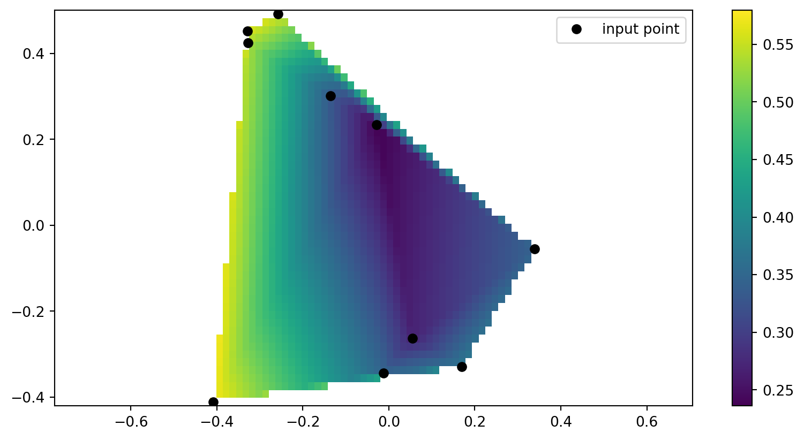

1.14.1SciPy
Scientific Computing
What is SciPy?
SciPy (pronounced “Sigh Pie”) is an open-source software for mathematics, science, and engineering.
- Scientific Python
- Basically a NumPy extension.
Why SciPy
- Most popular scientific computing platform in the world.
- Basis of scikit-learn, the most popular machine learning platform in the world.
- Extremely rigorous - most functions and documentation come with academic citations.
Why not SciPy
- SciPy for statistics has basically one challenger (statsmodels, which is great).
- Sometimes SciPy is too “heavyweight” and NumPy would be sufficient.
- As a rule, I tend to use NumPy for easy things and scikit-learn for hard things, and don’t use SciPy for much.
Relevance
- This is a scientific computing course!
- We’ll do a bit of signal processing and interpolation.
Credits
- SciPy is a big, complex library with many components.
- I used each of:
- The User Guide
- The API reference
- API is “application program interface” - a description of the functions in SciPy by their arguments and return values.
- The Cookbook which may be unofficial.
Install
pip again
- Just like NumPy, Matplotlib is a Python package which we install via
pip
python3 -m pip install scipy- That might take a moment, when it does we can check it worked!
Verify
- We can quickly verify installation and introduce some conventions.
- Open up Python and import the libraries:
Other Installs
Motivation
- I thought it would be fun to do some signal processing on a recognizable data set:
- PSY - GANGNAM STYLE(강남스타일) M/V
YouTube
STOP
Instructor’s note: Do not click this link while streaming.
Problem Statement
- SciPy has the ability to read some filetypes but not others.
- Can read: “.wav” Waveform Audio File Format.
- Can’t read: YouTube urls
- We use Python package
yt-dlpto download from YouTube. - We use non-Python package
ffmpegto translate .mp4 files to .wav - We use VideoLAN VLC Media Player to play the .wav files.
Note
- You do not need to download any of these.
- Here is the .wav:
- Here is a link:
yt-dlp
- While I don’t think you need it for anything, I installed
yt-dlpas follows, from the shell:
python -m pip install yt-dlpffmpeg
- I believe this is the best place to download
ffmpegfor Windows and MacOS. - https://www.ffmpeg.org/download.html
- I used it on Ubuntu Linux and did not attempt and Windows or MacOS install.
Download
- Both
yt-dlpandffmpegare command line utilites (like Python, Neovim, orls). - I didn’t actually ever use
ffmpegdirectly, it is just used byyt-dlp. - Given the url, I used the following shell command:
yt-dlp -x --audio-format wav https://www.youtube.com/watch?v=9bZkp7q19f0 -o psy.wav- This tells
yt-dlpto go to the url, download to video, convert it to a .wav, and save it as “psy.wav”
VLC
- I highly recommend having VLC installed.
- https://www.videolan.org/vlc/#download
curl
- As an alternative, you can
curlthe file from the course webpage. curlis a shell command that downloads a file from a url.- Can also be used to get e.g. the “.csv” file we used with pandas!
- This directs the command line to download the file from the url and save it locally as “psy.wav”
scipy.io
wavfile
- To load a wavfile into SciPy, it is a simple matter.
- But first, we note one difference:
- With NumPy, we imported as
np - With pandas, we import as
pd
- With NumPy, we imported as
- With Matplotlib, we imported Matplotlib “dot” something - pyplot
- The “Python interface”
SciPy Modules
- SciPy is composed of many modules
matplotlib.pyplotis a previous example of a module.- For example:
scipy.ioincludes ways to read files.scipy.fftdoes Fast Fourier Transforms.scipy.statsdoes statistics.
Load “psy.wav”
- We will load a sound file as an np.array.
- This may look odd!
Multiple return
- This uses a slightly advanced Python topic of “multiple return”.
- Python can return multiple comma-separated values from a function.
- We can “unpack” the multiple values by providing comma separated variable names.
Aside: Tuples
- These multiple returns are just tuples.
- The things that are like lists, but not exactly.
- We can also use indexing to see individual elements of a tuple.
vs. Lists
- The only difference compared to lists is updates.
- In a list, we can change an element with its index:
Aside: Errors
- Doing this to a list would create an error.
- Thus far we have avoided showing example code that won’t work.
- We can use
tryandexcept(likeifandelse) on erroneous code.
Reading files
- Try except is very handy when reading files.
- A lot of files I try to read are garbled and can’t be read.
- Using
tryandexceptprevents Python errors.- More useful in big scripts than single-line things.
Example
- Earlier today, I tried the
curlcommand to get “psy.wav” while (unbeknownst to me) my internet was spotty. - I got a file named “psy.wav” that was of size
0 - Unsurprisingly, opening it with SciPy led to an error.
- This happens all the time!
Data
- Back to our .wav file.
- Let’s look at that data!
Rate
- You may have listened to the file (or not).
- Audio doesn’t come in for about 4 seconds.
- The song ends and there’s a kind of “outro”.
- We can see these on the plot.
- But that examples the zeros.
Plot
Back to Data
- Given the rate, we can look at values ever
rateamount of time. - I bet it’s seconds, so we’ll see 3 or 4 zero-only then some non-zero.
Why pairs?
- Those two values may look initially suspicious, then I remembered.
- Many mammals, including some assistant professors of computer science, have two ears!
- This is a stereo file - the pairs are for each of two speakers.
Test it
- Don’t believe me?
- Let’s split into a “left” and “right” file.
- We needn’t necessarily get the labels right, but these are simply NumPy operations.
- Then listen!
Transpose
- Remember
.transpose? - It will take an array of pairs and make a pair of arrays.
Split
- I will arbitrarily call one “left” and one “rite” (not “right” because we don’t know if we’re right).
Zeros
- We’ll also make a zero-only array of the same length.
Combine
- We can make left-only and rite-only arrays via:
- Combine
- Transpose
Save
- Let’s write/save both then give ’um a listen.
Listen
- Let’s write/save both then give ’um a listen.
Noise
Noise Reduction
- In a way, all sound is noise.
- Let’s try and isolate the vocals and music, regarding the other variously as noise at various points.
- First identify where vocals come in.
- To me, 0:04 to 0:09 seems instrumental.
View it
- Look for patterns
Repeats?
- Looks like volume cuts low on a repeated pattern.
- Maybe we can isolate that pattern.
- Let’s:
- Pick a range
- Find a minimal value
- Find where that value occurs.
Whoops!
- Oh we need to use absolute value.
- No worries!
Where?
- Use
np.whereto find where the low values occur.- We used with pandas
(array([ 13, 14, 18, 20, 31, 39, 44, 126,
127, 136, 137, 138, 148, 155, 157, 174,
176, 193, 197, 202, 219, 221, 222, 223,
231, 232, 262, 268, 317, 383, 405, 430,
13580, 25648, 26839, 28676, 29655, 64732, 131187, 131204,
153051, 210217, 216983, 271632, 278282]),)Patterns
- Maybe there’s something repeating on a periodicity of like… 65k?
Visualize
- Let’s just plot the place the minimum occurs.
More Bins
- Hard to see, we increase the “bin” count.
A Pattern?
- Only before vocals enter?
Isolate
- Let’s see if we can isolate a motif.
- We’ll take the first zero past.
- I hear about two repeats on this portion, so we’ll take a zero in the middle.
Motif
- You can go become a dj, or…
FFT
- The actual correct way to do this is with a SciPy FFT:
- And with a NumPy stride:
- Which is probably a bit much for now.
Stats
Regression
- One of the most used computation techniques is regression.
- It is used throughout the sciences, but most commonly in econometrics.
- In my my undergraduate economics class, I had a homework assignment to “prove” that raising minimum wage increases unemployment.
- It doesn’t, but that isn’t relevant here.
The Data
- I usually get economic data from the “St. Louis Fed” which has a data portal called “FRED”.
- Minimum wage FEDMINNFRWG
- Unemployment rage UNRATE
- Inflation CPIAUCSL
curl
- It is actually possible to
curlthese but you probably have to navigate the websites to find the urls regardless. - I retrieved these manually on MS Windows on 31 May 2025 at 7:33 PM PT.
curl https://github.com/cd-public/scicom/raw/refs/heads/main/qmd/src/FEMINNFRWG.csv -o FEDMINNFRWG.csv
curl https://github.com/cd-public/scicom/raw/refs/heads/main/qmd/src/UNRATE.csv-o UNRATE.csv
curl https://github.com/cd-public/scicom/raw/refs/heads/main/qmd/src/CPIAUCSL.csv -o CPIAUCSL.csvWithin Python
- You can of course also get these with out leaving Python.
- Given some url with Python
url = "https://..."
- You can of course also:
- pandas
pd.read_csv(url) - “os”
os.system("curl " + url + " -o name.csv")
- pandas
How I did it
import pandas as pd
minwage = pd.read_csv("https://github.com/cd-public/scicom/raw/refs/heads/main/qmd/src/FEDMINNFRWG.csv")
unemploy = pd.read_csv("https://github.com/cd-public/scicom/raw/refs/heads/main/qmd/src/UNRATE.csv")
inflate = pd.read_csv("https://github.com/cd-public/scicom/raw/refs/heads/main/qmd/src/CPIAUCSL.csv")
inflate| observation_date | CPIAUCSL | |
|---|---|---|
| 0 | 1947-01-01 | 21.480 |
| 1 | 1947-02-01 | 21.620 |
| 2 | 1947-03-01 | 22.000 |
| 3 | 1947-04-01 | 22.000 |
| 4 | 1947-05-01 | 21.950 |
| ... | ... | ... |
| 935 | 2024-12-01 | 317.603 |
| 936 | 2025-01-01 | 319.086 |
| 937 | 2025-02-01 | 319.775 |
| 938 | 2025-03-01 | 319.615 |
| 939 | 2025-04-01 | 320.321 |
940 rows × 2 columns
Check Columns
Merge
- This is suitable for a merge.
- Alternatively, set date as index then join.
Adjustments
- Unemployment rate is rate.
- Minimum wage is a nominal value (e.g. it’s units are ill-defined).
- Inflation is an index of wage units.
- We can divide wage by inflation to get a “real wage”.
Percent Change
- We measure percent change in real wages.
- We use pandas
.pct_change()- It’s recommend by SciPy
- We drop the row
0which has no percent change.- Drop rows by index, vs
column=<name>
- Drop rows by index, vs
- We drop an undefined (“NaN”) values
- We use pandas
Unemployment
- Oh we should probably take a percentage change in unemployment as well.
Look at it
Linear Regression
- The standard measure of statistical significance.
- We are assuming linearity, but it is already a comparison between rates.
- For more, study statistics!
linregress
Credit
- The remainder is adapted from the
scipy.stats.linregressexample.
View
Confidence Interval
- “Two-sided inverse Students t-distribution”
Results
Tada!
- Raising minimum wage doesn’t predictable impact unemployment.
Exercise
Technetium
- We recall the periodic table data
df = pd.read_csv("https://gist.githubusercontent.com/GoodmanSciences/c2dd862cd38f21b0ad36b8f96b4bf1ee/raw/1d92663004489a5b6926e944c1b3d9ec5c40900e/Periodic%2520Table%2520of%2520Elements.csv")
df[::30]| AtomicNumber | Element | Symbol | AtomicMass | NumberofNeutrons | NumberofProtons | NumberofElectrons | Period | Group | Phase | ... | FirstIonization | Density | MeltingPoint | BoilingPoint | NumberOfIsotopes | Discoverer | Year | SpecificHeat | NumberofShells | NumberofValence | |
|---|---|---|---|---|---|---|---|---|---|---|---|---|---|---|---|---|---|---|---|---|---|
| 0 | 1 | Hydrogen | H | 1.007 | 0 | 1 | 1 | 1 | 1.0 | gas | ... | 13.5984 | 0.00009 | 14.175 | 20.28 | 3.0 | Cavendish | 1766.0 | 14.304 | 1 | 1.0 |
| 30 | 31 | Gallium | Ga | 69.723 | 39 | 31 | 31 | 4 | 13.0 | solid | ... | 5.9993 | 5.91000 | 302.910 | 2477.00 | 14.0 | de Boisbaudran | 1875.0 | 0.371 | 4 | 3.0 |
| 60 | 61 | Promethium | Pm | 145.000 | 84 | 61 | 61 | 6 | NaN | artificial | ... | 5.5820 | 7.26000 | 1204.150 | 3273.00 | 14.0 | Marinsky et al. | 1945.0 | NaN | 6 | NaN |
| 90 | 91 | Protactinium | Pa | 231.036 | 140 | 91 | 91 | 7 | NaN | solid | ... | 5.8900 | 15.40000 | 1873.150 | 4300.00 | 14.0 | Hahn and Meitner | 1917.0 | NaN | 7 | NaN |
4 rows × 28 columns
Interpolation
- When first setting out the table, a number of elements had not yet been “observed”
- That is, no one determined their chemical properties while away they were an element.
- Some certainly were never observed, namely technetium (Tc, 43) which does not exist in nature.
- However, the layout of the table allowed scientists to predict properties of technetium
Extract
- We will:
- Set aside technetium in a variable to check our predictions against.
- Remove the “transuranic” elements which were also not yet observed.
AtomicNumber 43
Element Technetium
Symbol Tc
AtomicMass 98.0
NumberofNeutrons 55
NumberofProtons 43
NumberofElectrons 43
Period 5
Group 7.0
Phase artificial
Radioactive yes
Natural NaN
Metal yes
Nonmetal NaN
Metalloid NaN
Type Transition Metal
AtomicRadius 2.0
Electronegativity 1.9
FirstIonization 7.28
Density 11.5
MeltingPoint 2473.15
BoilingPoint 5150.0
NumberOfIsotopes 23.0
Discoverer Perrier and Segr�
Year 1937.0
SpecificHeat NaN
NumberofShells 5
NumberofValence NaN
Name: 42, dtype: objectImport
- To save some typing, we’ll import it directly.
Data
- We recall electronegativity.
Reference
- The documentation we’re following is here
Code
from scipy.interpolate import LinearNDInterpolator
import numpy as np
import matplotlib.pyplot as plt
rng = np.random.default_rng()
x = rng.random(10) - 0.5
y = rng.random(10) - 0.5
z = np.hypot(x, y)
X = np.linspace(min(x), max(x))
Y = np.linspace(min(y), max(y))
X, Y = np.meshgrid(X, Y) # 2D grid for interpolation
interp = LinearNDInterpolator(list(zip(x, y)), z)
Z = interp(X, Y)
plt.pcolormesh(X, Y, Z, shading='auto')
plt.plot(x, y, "ok", label="input point")
plt.legend()
plt.colorbar()
plt.axis("equal")
plt.show()
Working df
- We need a
dfto work with. - We need only Group, Period, Electronegativity
- We must not have any invalid entries.
- We modify
dfto have only these 3 values, then.dropna()
X
- We will:
- Determine the input x values.
- We call this
X(capitalized) to denote it is a vector or array.
- We used “Group” for x.
Y
- We will:
- Determine the input x values.
- We call this
Y(capitalized) to denote it is a vector or array.
- We used “Period” for y.
2D
- We will:
- Create the 2D space given
XandY - This is a “column stack”
- Create the 2D space given
Z
- We will:
- Provide known output values as
Z
- Provide known output values as
SciPy
- Back to SciPy!
- Use
LinearNDInterpolar
- Use
- It basically makes a function that theoretically described electronegativity.
Stop!
Note
- We are about to, essentially, conduct an experiment!
- We should make a hypothesis first, then test it.
- First, naively predict Tc’s electronegativity, and write down your guess!
- The next slides have my guess, but you should make your own guess first!
My Guess
- I took the electronegativity of Tc’s neighbors vertically and horizontally.
AtomicNumber 43
Element Technetium
Symbol Tc
AtomicMass 98.0
NumberofNeutrons 55
NumberofProtons 43
NumberofElectrons 43
Period 5
Group 7.0
Phase artificial
Radioactive yes
Natural NaN
Metal yes
Nonmetal NaN
Metalloid NaN
Type Transition Metal
AtomicRadius 2.0
Electronegativity 1.9
FirstIonization 7.28
Density 11.5
MeltingPoint 2473.15
BoilingPoint 5150.0
NumberOfIsotopes 23.0
Discoverer Perrier and Segr�
Year 1937.0
SpecificHeat NaN
NumberofShells 5
NumberofValence NaN
Name: 42, dtype: objectOne Way
- Tc is group 7 and period 5, so, perhaps…
Aside: Boolean Index
- The previous example was not graceful.
- We can use Boolean Indexing
- The range detection method used earlier in
piecewise.pydoesn’t work on arrays unfortunately. - But
(array < value) & (array > value)works.
Aside: Example
Aside: Immediate Neighbor
- It actually probably makes more sense to take
- The sum, of
- The absolute values, of
- The differences, between
- Tc’s group and period, and
- The tested row’s group and period.
Immediate Example
My Estimate:
- After picking what I thought was things near Tc that should cancel out each other’s distance, I calculate their mean.
- This is my naive prediction.
- Now I interpolate.
Interpolate
LinearNDInterpolatortakes an array of known inputs and an array of known outputs and returns a function that it thinks describes the relationship.- “Thinks” being a vague term here to convey a sense of learning or prediction or estimation.
Exercise
- Predict using your own methods the density of Tc.
- Interpolate using SciPy the density of Tc.
Solution
Code
df = pd.read_csv("https://gist.githubusercontent.com/GoodmanSciences/c2dd862cd38f21b0ad36b8f96b4bf1ee/raw/1d92663004489a5b6926e944c1b3d9ec5c40900e/Periodic%2520Table%2520of%2520Elements.csv")
df.drop(42)
df = df[["Group", "Period", "Density"]]
df = df.dropna()
f = LinearNDInterpolator(np.column_stack((df["Group"],df["Period"])), df["Density"])
me = df[(abs(df["Group"] - 7) + abs(df["Period"] - 5)) < 2]["Density"].mean()
[f(7,5), me, Tc["Density"]]